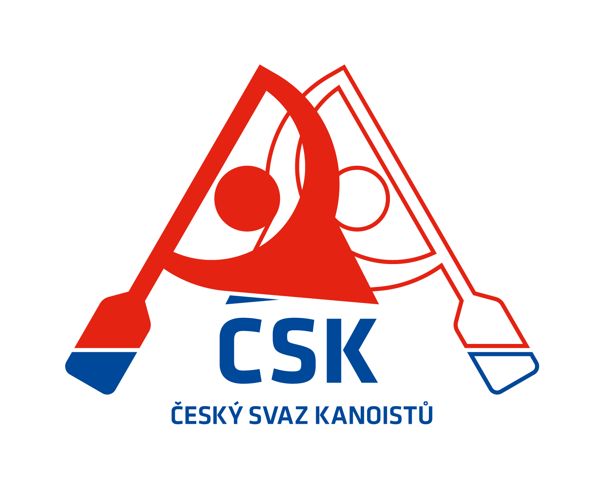

📅 Termínová listina vodáckých závodů 2026
v1 23.1.2026
| Cal | Datum | Místo | Pořadatel | Disciplína | Úroveň | Akce / Poznámka |
|---|
Z podkladů ZK ČSK vytvořil Jakub Bican / SK VS ČB www.ww-cb.cz
![Logo SK VS ČB]()

| Cal | Datum | Místo | Pořadatel | Disciplína | Úroveň | Akce / Poznámka |
|---|
Z podkladů ZK ČSK vytvořil Jakub Bican / SK VS ČB www.ww-cb.cz